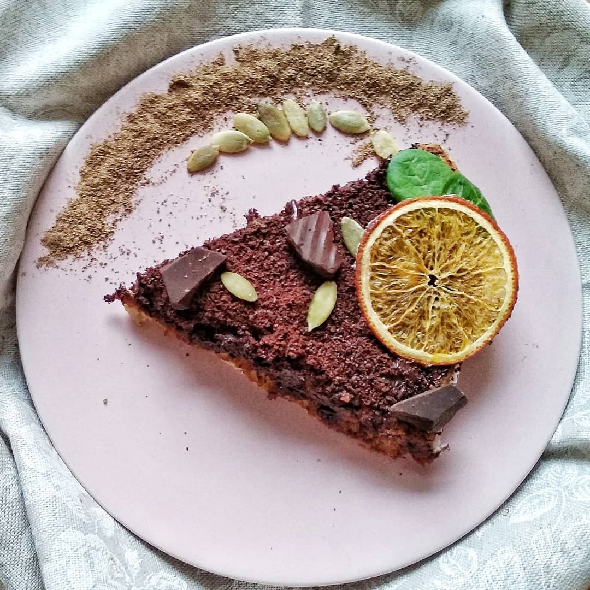
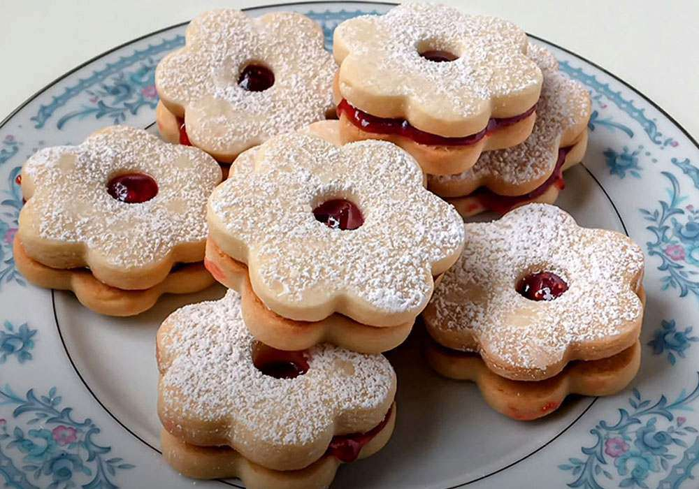
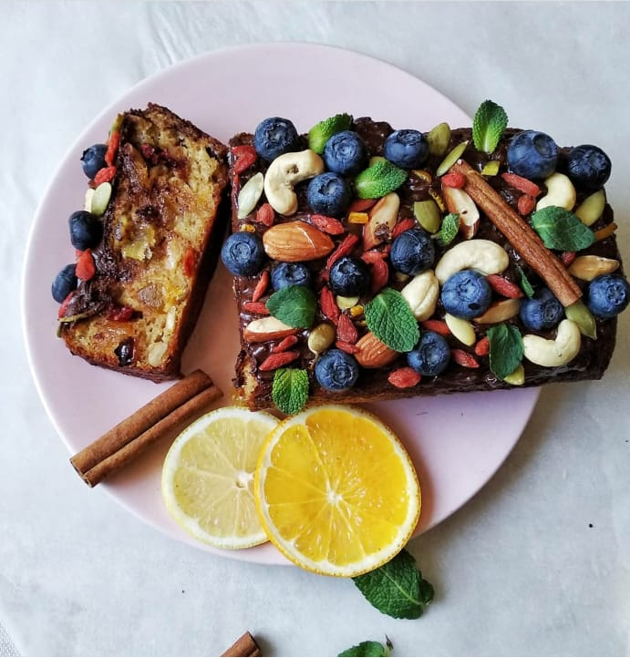

Здорове харчування
Випічка
Гарбузовий пиріг із цукатами та чорним шоколадом
Вам знадобиться: 3 яйця, склянка кефіру, щіпка соди, 40 г кураги, 40 г родзинок, цукати або терті фрукти без рідини, склянка тертого гарбуза без рідини, склянка цільнозернового борошна. ОТЖЕ: Яйця збийте до густої піни, додайте до них кефір і соду. Висипте до суміші подрібнену курагу, родзинки, цукати, фрукти та гарбуз. Перемішайте та додайте склянку борошна: в результаті в’язкість тіста має бути як у густої сметани. Запікайте у духовці, нагрітій до 160–170 градусів, протягом 40–45 хвилин. Гарячий пиріг прикрасьте тертим шоколадом і насінням гарбуза.
Мигдалеве печиво з джемом
Вам потрібно: 240 г мигдалевого борошна, 60 г кукурудзяного крохмалю, 1,5 ч.л. розпушувача, дрібка солі, 70 г меду, 2 ст.л. кленового сиропу, 60 г горіхової пасти, ваніль, 2-3 ст.л. води, джем. Змішати всі сухі інгредієнти: мигдалеве борошно, крохмаль, розпушувач та сіль. Додати сироп та мед. Змішуємо горіхову пасту з ваніллю та сухою сумішшю, додаємо 2-3 ст.л. холодної води та замішуємо тісто. Ділимо тісто приблизно на 15 однакових кульок. У кожній з них по центру робимо виїмку за допомогою невеликої ложки. В отриману виїмку кладемо трішки джему. У якості джему можна використати перетерті ягоди, зварені з кленовим сиропом. Відправляємо в духовку випікатися на 160 градусів 10-15 хвилин.
Кекс із цукатами, журавлиною, горіхами, лохиною та м’ятою
Вам знадобиться: 3 яйця, 150 г вершкового масла 83%, склянка кефіру 1%, сода, ваніль, кориця, 1,5–2 стакани цільнозернового борошна, 20 г ягід в’яленої журавлини, годжі, насіння гарбуза, мигдалю, кеш’ю або інших інгредієнтів за вашою фантазією, 2 плитки чорного гіркого шоколаду 99%, гілочки м’яти, ягоди лохини, цукати лимонні та апельсинові. Яйця збийте міксером до зміни кольору та утворення кульок повітря. Додайте склянку кефіру та соду. Додайте розтоплене вершкове масло, ваніль і корицю. Обережно додайте частину подрібнених ягід, горіхів, цукатів і розмішуйте так, щоб збереглися кульки повітря. Засипте борошно та ретельно розмішайте тісто. Випікайте при 160–180 градусах протягом 35–45 хвилин — тут залежить від вашої духової шафи. Готовий кекс полийте розтопленим на водяній бані гірким шоколадом і прикрасьте паличками кориці, листям м’яти, ягодами лохини, горіхами та цукатами.